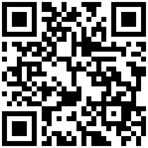

La Carrera más Linda de Boyacá
Escanea el código y consulta tu resultado

Descarga tu diploma y compártelo con tu familia
la-carrera-mas-linda.vercel.app
397 deportistas · 25 de octubre de 2026 · Chiquinquirá, Boyacá